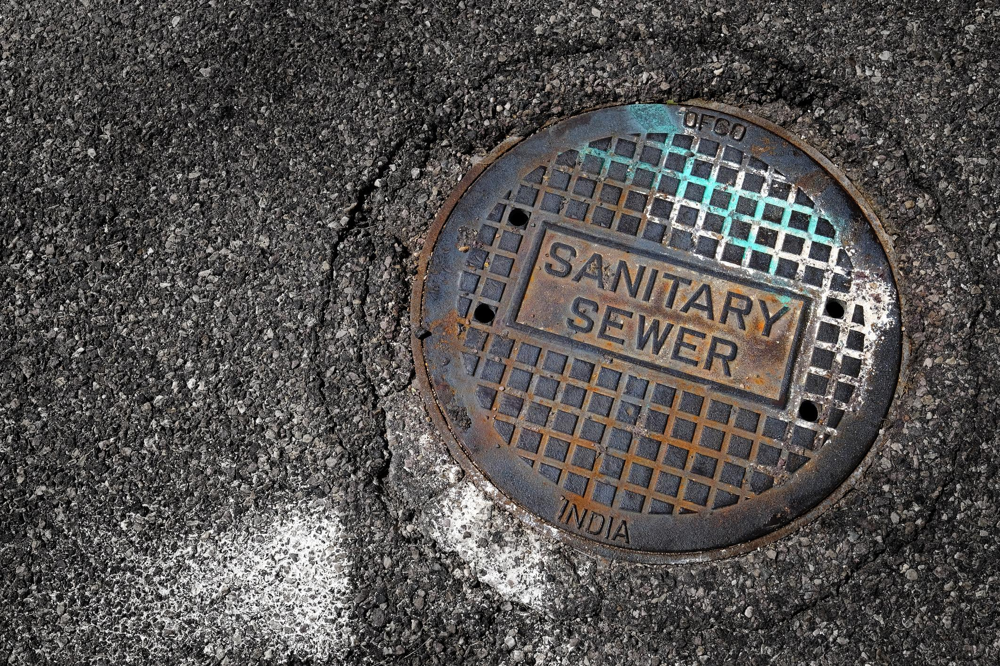
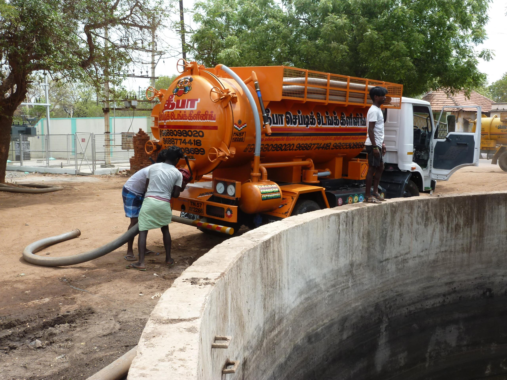
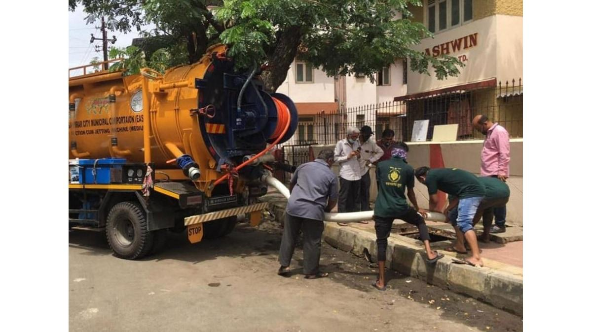

Image: Old Manhole cover in India,” by Sindugab.
Used under CC0 1.0.
Toilet to tank to contractor to worker
Every sewer death begins as a plumbing decision made years earlier. Where the pipe goes, who owns the tank, how often anyone empties it, and who gets telephoned when it blocks are all settled long before a worker reaches the manhole. The law in Exhibit 02 speaks to the last step. This exhibit looks at the four that come before it.
The argument is simple to state and awkward to resolve: India built its urban sanitation around two very different systems, and neither was designed so that no person would ever have to go inside. Between the two sits a contracting layer that decides which person.
Two plumbing systems
In urban India a household's toilet empties into one of two places: a public sewer network, or a private tank or pit on site. The 2011 Census, still the last full count of this by type, put the split like this for urban households.1

SYSTEM A / PUBLIC NETWORK
Waste moves through connected pipes. Coverage does not
guarantee that every location is accessible to machines.

SYSTEM B / ON-SITE CONTAINMENT
A private tank must be emptied. Who arranges the service,
and how it is performed, becomes critical.
Connected to underground sewerage32.7%
Septic tank38.2%
Pit latrine7.1%
Census 2011, as summarised by the Centre for Policy Research. The remainder includes other systems and households without a toilet.1
~4.5 croreurban households that use septic tanks, about half the total, per a ministry reply in August 20252
30 m vs 25 mhouseholds with a septic tank versus a sewerage connection in 20113
5cities with fully sewered systems in one 2016 national review; most cities run mixed systems4
Two caveats make the real picture worse than the headline. First, coverage figures can flatter: a study of one Tamil Nadu town reported anecdotal evidence that surveyors had counted covered drains as sewers in the Census.5 Second, a sewer line that exists is not a sewer line that works. In Uttar Pradesh, one analysis found more than 34 AMRUT cities with no sewerage network at all, and municipal coverage ranging from a high of 83.8% in Ghaziabad to 3.5% in Aligarh.6 A city is not "sewered" or "unsewered". It is a patchwork, and the patches are where people are sent in.
Why a network still needs a body
Even where sewers exist, they are not necessarily built for machines. A field report from Hyderabad describes a system of old, densely networked pipes under narrow streets with shared house walls, where large trucks cannot reach and human labour, in the author's phrasing, is inevitably Dalit labour. As the same piece observes, "Technically, this is not 'manual scavenging'."7 Another analysis adds that sewage lines are often connected to storm-water drains that clog and demand intervention, and that the sewer network of many cities does not cover the whole city.8
The chain, step by step
The sequence below is the exhibit's own simplification of how a single entry happens. Under each step is the party the law or the arrangement makes responsible for it.
The toilet
A flush toilet or an unsanitary latrine. The 2013 Act makes local authorities survey unsanitary latrines and the occupier convert or demolish them.9
Occupier · municipality
The containment
A public sewer line, or a private septic tank or pit. The sewer belongs to a body; the tank belongs to a building.
Jal board · property owner
The failure
A blockage, a monsoon surge, a full tank. Nothing in the layout makes anyone the owner of this moment.
No one scheduled
The call
Someone phones a contractor, a labour supplier or a neighbour. The Act defines "agency" to include a contractor, and bans engaging anyone for hazardous cleaning directly or indirectly.9
Contractor · sub-contractor
The entry
A daily-wage or contract worker goes down. Everything above him has already been settled.
The statute is detailed about steps one and five. It names the occupier and the municipality at the start, and the employer at the end. The middle three — the failure, the call, the sub-contract — are where responsibility is least defined, and they are also the steps where, on the evidence below, deaths are most often explained away. This is the exhibit's reading, not a statutory finding.
OBJECT 01 — INVESTIGATIVE REPORT (RTI-BASED)
"What it takes for a city to end manual scavenging" — Vasai-Virar
Aarefa Johari, Scroll.in, 6 February 2023. Part of a series based on Right to Information requests to 30 municipal corporations in western India, of which 14 replied. Linked, not reproduced.
Vasai-Virar is a young city, formed in 2009 from four towns and 53 villages north of Mumbai. About 95 per cent of it relies on septic tanks, and before 2021 it had four machines to desludge them for roughly twelve lakh residents. Seven workers hired privately died cleaning septic tanks, three in 2019 and four in 2020, without any immediate municipal response. In 2021, with central funds linked to a national competition called the Safaimitra Suraksha Challenge, the corporation bought ten suction-cum-jetting machines for ₹3.8 crore and five more desludging machines, and set up a helpline and an emergency response unit. The machines work in three northern wards connected to the drainage network, and sanitation workers told the reporter that some drains are still entered by hand.10

MECHANISATION / VASAI–VIRAR
The corporation purchased ten suction-cum-jetting machines
for ₹3.8 crore. Reporting found that machine access remained
uneven and some drains were still cleaned by hand.
Read the investigation ↗
→ read the report (Scroll.in)
WHY THIS OBJECT
It is a rare piece of evidence that tracks a single city across the whole chain: the plumbing, the money, the contract, the machine, the death and the aftermath. Three details matter most. The investment came from a competition rather than from the 2013 Act or from the deaths. All 3,200 sanitation workers are on contract, with wages, according to the head of the workers' union, at ₹4,500 a month until 2016, when the union won a minimum wage of ₹17,300. And the machines are cheap to call for a septic tank — ₹1,000 a visit, according to the corporation — yet the 2019 and 2020 deaths occurred in tanks hired privately, outside the corporation's service.
Mechanisation is not just a machine
A machine changes how a task can be performed. Whether it
prevents hazardous entry also depends on access, maintenance,
deployment and the way the work is contracted.
WATCH / MECHANISED SANITATION
Explore video reporting on sewer-cleaning machinery and
sanitation-worker safety.
Browse videos ↗
Who answers? A ledger of replies
When a worker dies, the first public question is who employed him. The replies below, from reporting and court records, show how often the answer is another party.
Incident
Who the authority said had hired the workers
What followed (as reported)
Vasai-Virar, May 2019 · three workers die in a septic tank10
A "private stakeholder": the builder and members of a housing society
Municipal corporation paid no ₹10 lakh compensation; eight accused were briefly arrested and released on bail, and the case has not progressed.
Vasai-Virar, April 2020 · four young men die in a private septic tank10
The owner of the house
The couple were not arrested; they were ordered to pay ₹10 lakh to each family and, per a local social worker, have paid ₹4 lakh each. An auction of their property drew no bidders.
Moti Nagar, West Delhi, September 2018 · five men die in a sewage tank at a housing complex11
A private employer, according to the Delhi Jal Board's vice-chairman, who said the Board had no jurisdiction
The Jal Board, the labour department and the municipal authorities each declined responsibility, per Scroll's report; activists said the failure was one of implementation at every level.
New Friends Colony, Delhi, March 2025 · one worker dies, two hurt12,13
Police said the work was allegedly for the Delhi Jal Board; the Board said the men were neither regular nor contractual staff and no work was sanctioned
Police recorded that the workers had no protective gear; the Board wrote to police asking for action and a copy of the FIR.
Gate F, Supreme Court, 2025 · drains cleaned by hand14
Delhi PWD told the Court it had engaged contractors, who acquired labourers without safety gear
Court fined PWD ₹5 lakh and warned of FIRs against officials for future violations.
Nothing in the table proves that any one denial is false. The pattern is the point. Each authority describes a real legal distinction — employee versus contractor, public sewer versus private tank, municipal work versus builder's work — and each distinction moves responsibility one link further from the worker. A civil-society leader quoted by PTI describes the practice directly: government departments outsource sanitation work to contractors, who employ daily-wage workers for sewer cleaning, and workers are still sent into manholes despite available machines, to cut costs.12 That is an advocate's account rather than an audited finding, and is offered here as a claim to test.
The same city, ten deaths, a promise
In 2017, after ten deaths in a month, Delhi's Lieutenant Governor and Chief Minister announced a directive for 100 per cent mechanisation of sewer and drain cleaning, with punishment up to life imprisonment for violations, and a strict regime to be prepared within seven days. The same meeting heard that manual cleaning also occurred in malls and farm houses, and that no proper list existed.15 The 2025 rows in the table above come eight years later, from the same capital. A pending public interest petition in the Delhi High Court asks that around 2,000 contractual Jal Board sewer workers be regularised, arguing that sewer cleaning is a permanent statutory function that cannot be outsourced.16
What this layer establishes
Three things carry forward. First, the demand for a human body is structural: two plumbing systems, neither built so that no one ever has to enter, and a patchwork of coverage in between. Second, the same structure produces a gap between the party that owns the asset and the party that owns the risk, and contracting widens it at every link. Third, the investment that does arrive tends to follow competitions and schemes rather than deaths or statutes, which means it arrives unevenly. The next exhibit puts faces to the last step in the chain.
Centre for Policy Research, Project Nirmal field note: Policy environment, summarising Census of India 2011 latrine data for urban households. cprindia.org
Ministry of Housing and Urban Affairs, Lok Sabha Unstarred Question No. 4802, answered 21 August 2025 (NAMASTE scheme). eparlib.sansad.in
Centre for Policy Research, "Beyond 2019: Why Sanitation Policy Needs to Look Past Toilets." cprindia.org
TERI, Urban Sanitation and Need for Faecal Sludge Management (FSM) in India, discussion paper, December 2016. terisas.ac.in
"Planning fecal sludge management systems: Challenges observed in a small town in southern India." pmc.ncbi.nlm.nih.gov
Centre for Science and Environment, Faecal sludge and septage management (Uttar Pradesh figures). cseindia.org
"When the sewers get blocked: sanitation labour in urban India," The India Forum / India Water Portal. theindiaforum.in
"Two Things Necessary To End Manual Scavenging," Swarajya, 14 September 2021. swarajyamag.com
Prohibition of Employment as Manual Scavengers and their Rehabilitation Act, 2013, ss.2(1)(a), 4, 5, 7. legislative.gov.in
Aarefa Johari, "What it takes for a city to end manual scavenging," Scroll.in, 6 February 2023. scroll.in
Scroll.in report on the Moti Nagar deaths and agencies' responses. scroll.in(check the exact publication date against the article before submitting)
"Deaths inside manholes: NGOs call for stricter adherence to ban, scrutiny on contractors," PTI, 18 March 2025. theweek.in
"Sewer tragedy: Workers were not wearing protective gear, say cops," The Tribune, March 2025. tribuneindia.com
"Manual sewer cleaning outside SC: Delhi PWD fined Rs 5 lakh," Scroll.in / PTI, 19 September 2025. scroll.in · PWD's submission as reported by siasat.com
"Fatalities: Delhi decides to mechanise sewer cleaning," The Wire, 2017. thewire.in
Delhi High Court notice on a PIL seeking regularisation of around 2,000 contractual Delhi Jal Board sewer workers, LiveLaw. livelaw.in